Lab 5: Percepção Auditiva
LABORATÓRIO DE PERCEPÇÃO AUDITIVA
TESTES E RESULTADOS
- Teste de Audiometria
- Procedimento
- Resultados
- Análise e Discussões
- Teste de Faixa Audível
- Procedimento
- Resultados
- Análise e Discussões
- Teste de Mascaramento de Tons Harmônicos
- Procedimento
- Resultados
- Análise e Discussões
- Teste de Localização de Fonte Sonora
- Procedimento
- Resultados
- Análise e Discussões
- Outros testes psicoacústicos
O teste de audiometria foi realizado a partir do da URL http://hearingtest.online /. Este teste online permite que os usuários possam acompanhar a qualidade de sua audição de forma simplificada, de maneira que caso haja piora no quadro de audição, o usuário pode procurar um especialista na área.
Para o teste realizado em laboratório, foram utilizadas duas configurações, uma com fones envolventes e outra utilizando a saída de som do celular ou computador.
Inicialmente, é necessário calibrar o dispositivo de saída de som. A calibração permite equalizar o volume (ou a intensidade do som) do som de duas mãos se esfregando disponíveis no site com o som das mãos do usuário.
Uma vez calibrado, há uma tabela, onde as colunas separam os sons com frequências diferentes e as linhas separam os sons pelo volume. O usuário deve então tentar escutar os sons de volume mais baixo ao mais alto, até que encontre o volume onde é possível escutar o som. Ao escutar os sons de diferentes frequências e volumes, um diagrama é criado com pontos que permitem verificar se há ou não alguma perda de audição.
Resultados do teste de audiometria do Artur com fones envolventes:
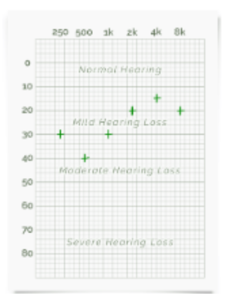Resultados do teste de audiometria do Artur utilizando saída de som do smartphone:
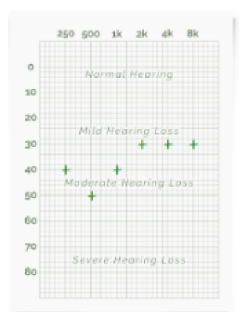Resultados do teste de audiometria do César com fones envolventes:
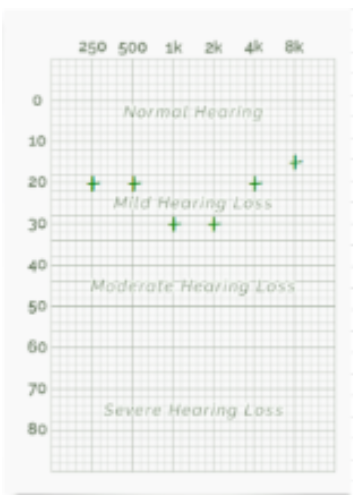Resultados do teste de audiometria do César utilizando saída de som do smartphone:
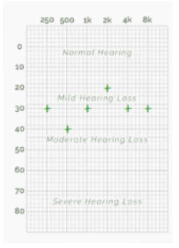Resultados do teste de audiometria do Eric com fones envolventes:
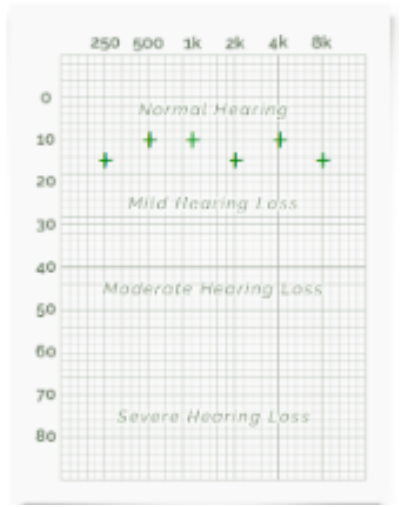Resultados do teste de audiometria do Eric utilizando saída de som do smartphone:
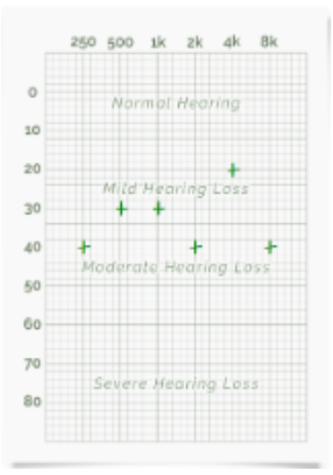Resultados do teste de audiometria da Julia com fones envolventes:
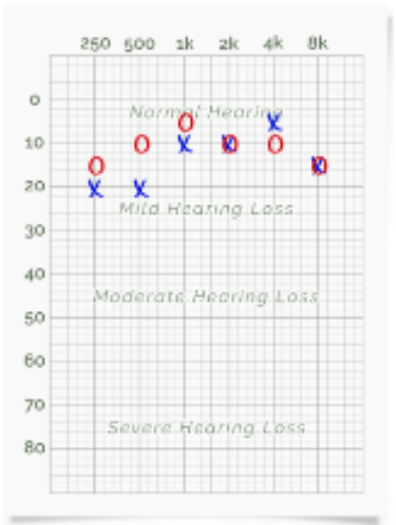Resultados do teste de audiometria da Julia utilizando saída de som do smartphone:
Resultados do teste de audiometria do Wellington com fones envolventes:
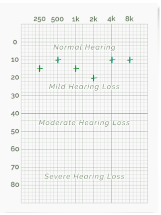Resultados do teste de audiometria do Wellington utilizando saída de som do smartphone:
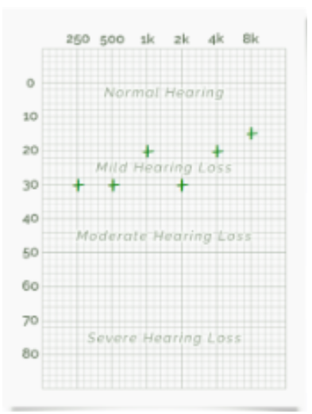Os resultados com os fones envolventes ficaram em sua maioria entre audição normal e uma leve perda de audição. Já os testes sem fones, tiveram em suas maioria uma piora na audição, de modo que as perdas ficaram entre uma perda leve e uma perda moderada da audição para certas frequências.
Há uma diferença menos perceptível nos testes realizados com fones de ouvido envolventes. O mais provável é de que os fones envolventes isolam melhor os sons externos e portanto as variações não foram tão grandes quanto os testes realizados sem os fones. Outro ponto a ser notado é de que resultados dos testes sem fones, dependem do dispositivo onde ocorreu a saída do som e da quantidade de ruído externo presente durante a realização dos testes.
O teste de faixa audível foi realizado a partir do da URL https://www.youtube.com/watch?v=H-iCZElJ8m0 . Neste vídeo, há variação da frequência de um som, sem alterar seu volume. O usuário deve anotar a frequência em que o som começa a ser perceptível e a frequência em que o som deixa de ser perceptível.
A tabela abaixo, compila a frequência mínima audível e a frequência máxima audível de cada aluno com diferentes dispositivos de som.
| Com Fones Envolventes | Fone intra ou computador | Celular sem fone | ||
|---|---|---|---|---|
| Artur | faMÍN | 27 Hz | 25 Hz | 100 Hz |
| faMÁX | 15850 Hz | 15780 Hz | 15500 Hz | |
| César | faMÍN | 35 Hz | 110 Hz | 80 Hz |
| faMÁX | 16303Hz | 15000Hz | 15300Hz | |
| Eric | faMÍN | 30 Hz | 27 Hz | 95 Hz |
| faMÁX | 15710 Hz | 15630 Hz | 15357 Hz | |
| Julia | faMÍN | 26 Hz | 20 Hz | 130 Hz |
| faMÁX | 15509 Hz | 15952 Hz | 14529 Hz | |
| Wellington | faMÍN | 28 Hz | 25 Hz | 110 Hz |
| faMÁX | 15980 Hz | 15875 Hz | 14845 Hz |
Com os fones envolventes, houve um valor médio de 30 Hz com um desvio entre os alunos de aproximadamente 3 Hz, ou 10% da média, para o início da percepção do áudio. Já o limite onde o som parou de ser perceptível teve um valor médio de aproximadamente 15,9 kHz com um desvio de aproximadamente 135 Hz, ou 0,8% da média, entre os alunos.
Os resultados sem os fones de ouvido envolventes mostraram uma piora na percepção das frequências, principalmente nas frequências mais altas. As variações nos resultados divergem pela diferença nos dispositivos de som utilizados pelos alunos.
Por ser um vídeo do Youtube, pode haver um problema na qualidade do áudio, a depender da qualidade do vídeo carregado, é indicado sempre utilizar o vídeo em HD. Os fones de ouvido envolventes conseguem emitir sons em baixa frequência, entretanto há a possibilidade do som a partir das caixas de som ou o celular, “cortar” certas frequências por limitações de hardware. Deve-se sempre se atentar a filtros de áudio e codecs especializados instalados no dispositivo de saída do som, isso pode interferir nas frequências emitidas por software.
O teste de Mascaramento de Tons Harmônicos consiste em um código em python que gera dois sons com frequências diferentes, cada um com duração de 200 ms. Ambos são colocados nu mesmo som com um tempo de pausa entre si 100 ms. Em seguida um dos sons passa a ter uma atenuação sequencial do som em 3 dBs.
Os alunos escutam os sons e anotam em qual o nível de atenuação o som deixa de ser perceptível.
Podemos observar os resultados de cada aluno com as diferentes atenuações e frequências. Os resultados abaixo foram obtidos para a f1 de 2 kHz e f2 de 1,2 kHz.
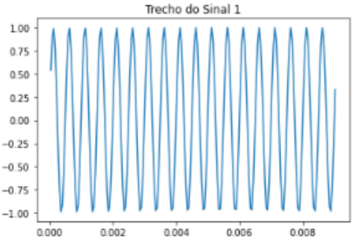 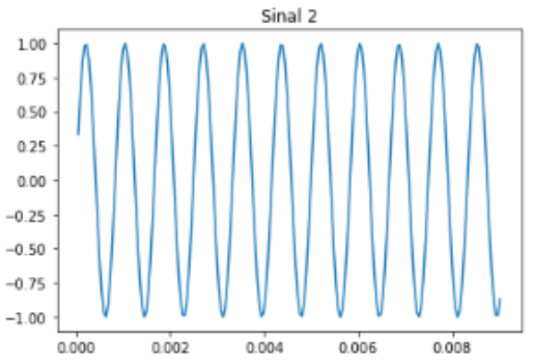| F1 = 2kHz e F2 = 1,2kHz | |||
|---|---|---|---|
| Tom encobridor | Tom mascarado | Fator de Atenuação | |
| Artur | 2kHz | 1,2kHz | -15dB |
| 1,2kHz | 2kHz | -15dB | |
| César | 2kHz | 1,2kHz | -15db |
| 1,2kHz | 2kHz | -15db | |
| Eric | 2kHz | 1,2kHz | -15db |
| 1,2kHz | 2kHz | -15db | |
| Julia | 2kHz | 1,2kHz | -15db |
| 1,2kHz | 2kHz | -15db | |
| Wellington | 2kHz | 1,2kHz | -15db |
| 1,2kHz | 2kHz | -15db |
Os resultados abaixo foram obtidos para a f1 de 600 Hz e f2 de 1 kHz.
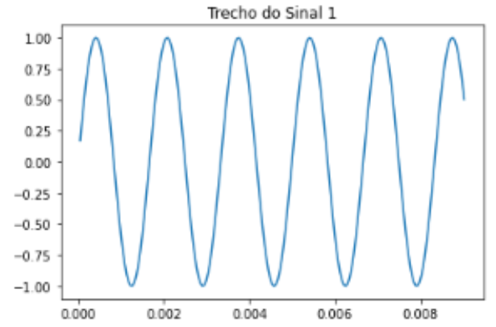 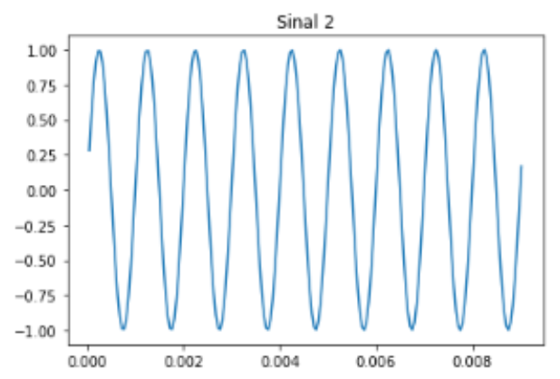| Tons abaixo (f1 = 600Hz e f2 = 1kHz) | |||
|---|---|---|---|
| Tom encobridor | Tom mascarado | Fator de Atenuação | |
| Artur | 600Hz | 1kHz | -15dB |
| 1kHz | 600Hz | -15dB | |
| César | 600Hz | 1kHz | -15db |
| 1kHz | 600Hz | -15db | |
| Eric | 600Hz | 1kHz | -15db |
| 1kHz | 600Hz | -15db | |
| Julia | 600Hz | 1kHz | -15db |
| 1kHz | 600Hz | -15db | |
| Wellington | 600Hz | 1kHz | -15db |
| 1kHz | 600Hz | -15db |
Os resultados abaixo foram obtidos para a f1 de 2,4 kHz e f2 de 4 kHz.
| Tons acima (f1 = 2,4kHz e f2 = 4kHz) | |||
|---|---|---|---|
| Tom encobridor | Tom mascarado | Fator de Atenuação | |
| Artur | 2,4kHz | 4kHz | -15dB |
| 4kHz | 2,4kHz | -15dB | |
| César | 2,4kHz | 4kHz | -15db |
| 4kHz | 2,4kHz | -15db | |
| Eric | 2,4kHz | 4kHz | -15db |
| 4kHz | 2,4kHz | -15db | |
| Julia | 2,4kHz | 4kHz | -15db |
| 4kHz | 2,4kHz | -15db | |
| Wellington | 2,4kHz | 4kHz | -15db |
| 4kHz | 2,4kHz | -15db |
Todos os alunos obtiveram em todos os testes e com as diversas frequências, uma percepção de atenuação do som em -15 dB. Tanto com o mascaramento da frequência 1 com a frequência 2 e vice-versa.
O efeito do mascaramento se torna maior quando a os sons têm frequências próximas.
O teste de localização de fonte sonora, utilizou um capacete criado especificamente para as medições deste experimento. Este capacete possui dois fios presos ao seu centro e uma escala de ângulos divididos em quadrantes.
Para este experimento, são necessários três alunos. Um dos alunos é vendado e será avaliado, outro aluno irá posicionar a caixa de som em um ponto pré determinado, o outro aluno utiliza os dois fios presos no capacete, para anotar a posição original da caixa de som, enquanto o outro fio é utilizado para anotar a posição em que o aluno avaliado percebe o som ao seu redor.
Dois sons diferentes foram usados, um de sinos e outro de chaves, cadas som com o mesmo volume na caixa de som.
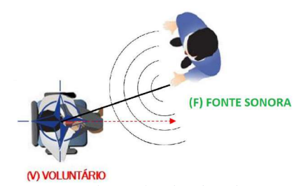A tabela a seguir compila os resultados obtidos durante o experimento. Cada aluno realizou o teste três vezes com cada um dos sons com localizações aleatórias. A tabela fornece os valores obtidos em quadrante e ângulo, o valor convertido em ângulo com o zero de referência e o valor da variação entre o ângulo do som emitido e o som percebido pelo aluno.
| Integrante | Som | Setor- ngulo Sorteado | Setor- ngulo Indicado | ngulo Real Sorteado (°) | ngulo Indicado (°) | Incerteza absoluta(°) |
|---|---|---|---|---|---|---|
| Artur | Chaves | 4-11 | 4-20 | 281 | 290 | 9 |
| 4-82 | 4-75 | 352 | 345 | 7 | ||
| 2-82 | 2-81 | 172 | 171 | 1 | ||
| Sino | 1-67 | 1-50 | 67 | 50 | 17 | |
| 4-77 | 4-70 | 347 | 340 | 7 | ||
| 4-70 | 4-51 | 340 | 321 | 19 | ||
| César | Chaves | 4-68 | 1-63 | 338 | 63 | 85 |
| 3-89 | 3-71 | 269 | 251 | 18 | ||
| 4-40 | 4-40 | 310 | 310 | 0 | ||
| Sino | 3-29 | 3-40 | 209 | 220 | 11 | |
| 3-78 | 3-78 | 258 | 258 | 0 | ||
| 2-41 | 2-50 | 131 | 140 | 9 | ||
| Eric | Chaves | 4-79 | 4-85 | 349 | 355 | 6 |
| 1-6 | 1-17 | 6 | 17 | 11 | ||
| 1-77 | 1-72 | 77 | 72 | 5 | ||
| Sino | 3-32 | 3-40 | 212 | 220 | 8 | |
| 2-19 | 2-19 | 109 | 109 | 0 | ||
| 3-41 | 3-41 | 221 | 221 | 0 | ||
| Julia | Chaves | 1-20 | 4-5 | 20 | 275 | 105 |
| 3-58 | 3-72 | 238 | 252 | 14 | ||
| 2-88 | 4-40 | 178 | 310 | 132 | ||
| Sino | 2-85 | 3-80 | 175 | 260 | 85 | |
| 4-52 | 4-65 | 322 | 335 | 13 | ||
| 4-43 | 4-43 | 313 | 313 | 0 |
Alguns dos valores de variação foram muito acima do esperado, alguns acima de 100º, entretanto se excluirmos esses valores, a média global das variações foi de 8º. Um valor aceitável, dado que há uma pequena variação no posicionamento da mão do avaliado com o valor verificado pelo outro aluno. Os valores com diferença elevada podem ter sido ocasionados pelo ruído no ambiente, que pode ter confundido o avaliado, ou simplesmente a percepção do som do avaliado foi neurologicamente alterado.
Fotos dos integrantes durante o experimento.
 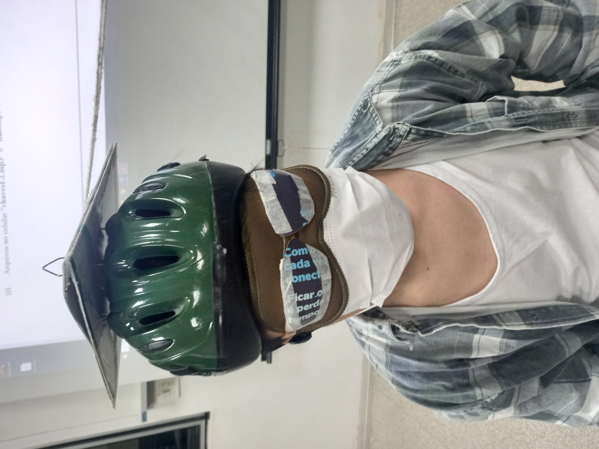
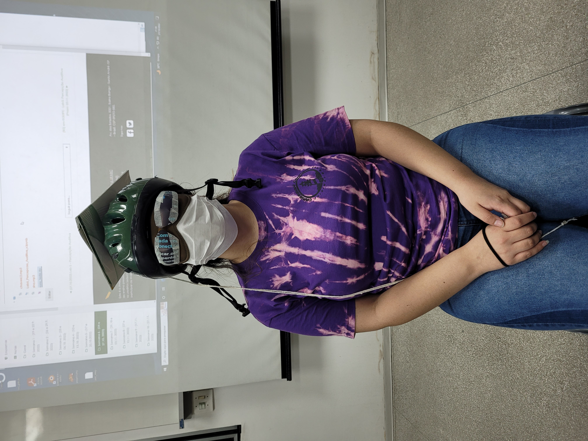
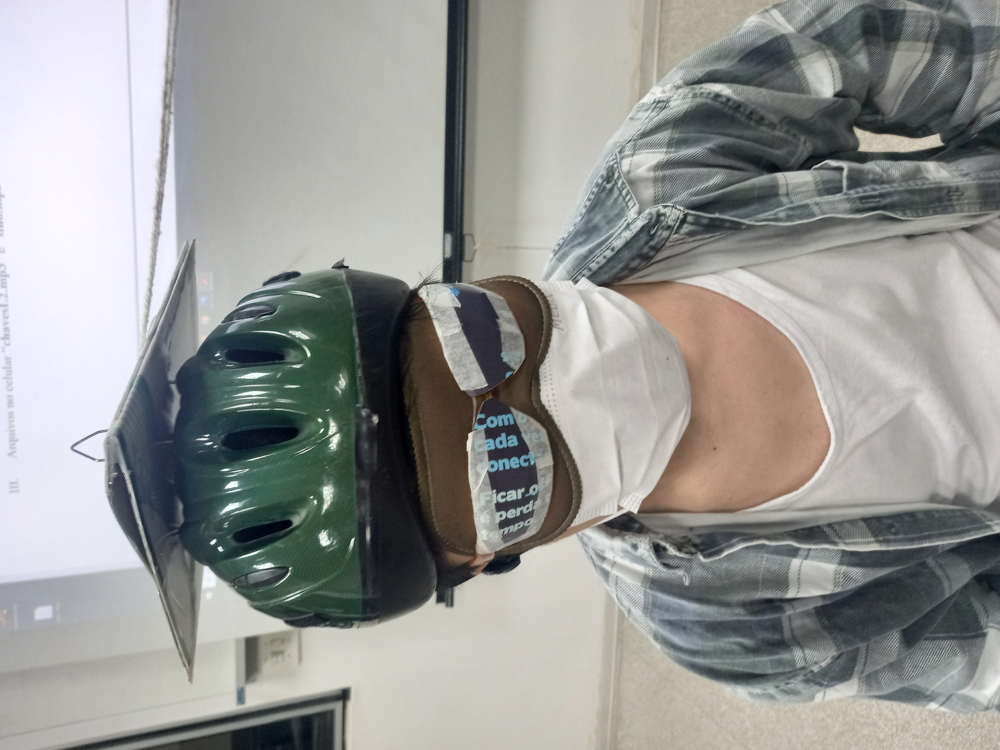
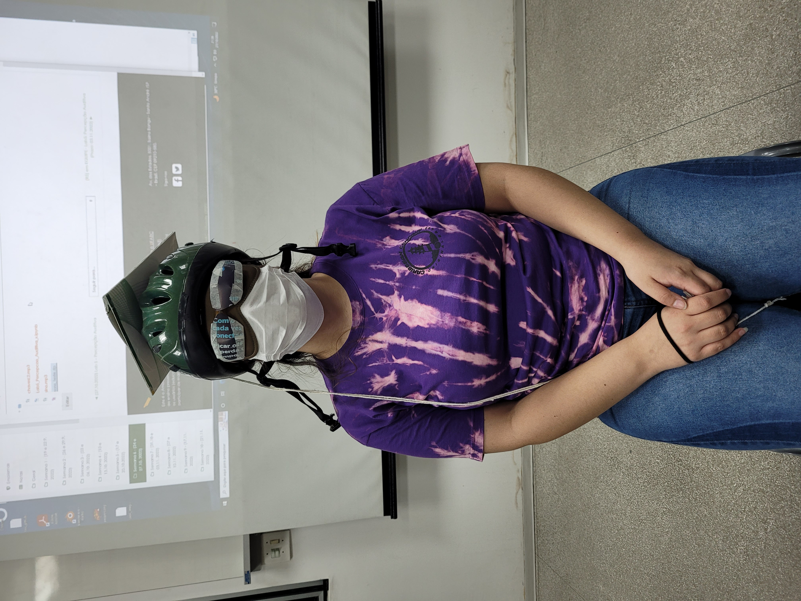

Um teste que poderia ser realizado é o teste de Limiar de desconforto. De modo que para cada frequência, é testado o limiar de desconforto correspondente ao nível mínimo de pressão acústica eficaz necessária para produzir uma sensação de desconforto auditivo. Entretanto este teste pode causar desconforto nos alunos ou avaliados, portanto não é indicado para salas de aula.
Podemos citar o seguinte estudo:
RIBEIRO, Ana Elisa FC et al. Pesquisa do limiar de desconforto auditivo em pacientes com hipersensibilidade auditiva. Distúrbios da Comunicação, v. 19, n. 2, 2007. https://revistas.pucsp.br/dic/article/download/11896/8612
Este estudo visou entender quais os níveis aceitáveis de ruído que pessoas com hipersensibilidade auditiva possuem em comparação com pessoas com audição considerada normal.